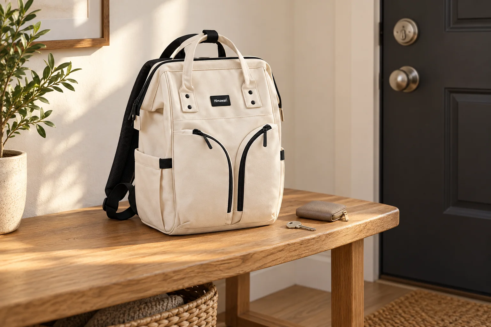

집 앞에서 열쇠를 찾는 백팩: 문을 열기 전후의 작은 순서

집 앞까지 왔는데 열쇠가 휴대전화 아래로 숨어 있으면 백팩을 다시 크게 열게 됩니다. 문을 연 뒤 손에 든 열쇠를 식탁에 놓으면 다음날에는 가방이 아니라 집 안을 찾게 되기도 합니다. 가방 전체를 정리할 시간이 없어도 열쇠 한 묶음의 출발점과 돌아올 자리는 정할 수 있습니다. 열쇠의 개수를 줄이는 일보다 잠깐 꺼낸 물건이 제자리로 돌아오는 동작에 초점을 맞춰보세요.
손으로도 구분되는 작은 묶음을 만듭니다
집 열쇠와 자주 쓰지 않는 열쇠가 같은 고리에 있다면 오늘 필요한 구성을 먼저 확인합니다. 열쇠 끝이 가방 안감이나 다른 소품에 직접 닿지 않게 크기에 맞는 케이스나 닫히는 파우치를 사용할 수 있습니다. 다른 파우치와 모양이 모두 같다면 열기 전 구분할 수 있는 촉감이나 손잡이 형태를 단서로 삼아보세요. 큰 장식을 더 달아 찾기 쉽게 만들기보다 지퍼에 걸리지 않을 간단한 묶음이 좋습니다.
문 앞에서는 가방을 받칠 자리부터 봅니다
한쪽 어깨에 가방을 걸고 팔을 뒤로 뻗어 찾기보다, 몸 앞에서 안정적으로 열 수 있도록 자세를 바꿉니다. 장을 본 봉투나 다른 짐이 있다면 넘어지지 않을 자리에 먼저 두고 필요한 열쇠 묶음만 꺼내세요. 복도 통로를 오래 막지 않도록 다른 소품까지 펼치지 않습니다. 외부 포켓을 쓰는 경우에도 항상 열린 상태로 두지 말고 꺼낸 뒤 여밈을 닫습니다.
문을 연 다음이 열쇠 정리의 마지막 동작입니다
열쇠를 쓴 직후에는 손에 그대로 들고 다른 짐부터 정리하기 쉽습니다. 현관에서 가방을 내려놓고 열쇠를 원래 케이스에 넣은 뒤 정한 칸으로 되돌려보세요. 옷 주머니를 임시 자리로 썼다면 그 사실을 기억에만 맡기지 말고 바로 회수합니다. 가방에 없는 고리를 임의로 연결하거나 지퍼 손잡이에 열쇠 무게를 매달아 고정하지 않습니다. 제품에 안내된 연결 부위가 있는지는 실제 구성에서 확인해야 합니다.
다음 외출에는 묶음의 위치만 확인합니다
가방을 바꾼 날이라면 열쇠 파우치를 옮긴 뒤 새 가방에서 다시 한 번 꺼내보세요. 같은 앞주머니처럼 보여도 깊이와 여는 방향은 다를 수 있습니다. 외출 직전에는 필요한 열쇠 묶음이 있는지와 지퍼의 닫힘을 확인하고, 주소나 출입 정보가 적힌 표식을 밖으로 드러내지 않습니다. 사진의 No.1208 아이보리는 가로 29 × 세로 40 × 폭 17cm의 실제 제품을 참조했지만, 별도 열쇠 수납 기능을 검증한 이미지가 아닙니다.
참고·안내
- Himawari No.1208 제품 정보
- 실제 Himawari No.1208 아이보리 제품을 참조한 AI 연출입니다. 열쇠와 파우치는 소품이며 제품에 전용 열쇠 고리가 포함된다는 의미가 아닙니다.
자주 묻는 질문
열쇠는 앞주머니에 두면 되나요?
찾기 쉬운지만 보지 말고 주머니가 닫히는지, 다른 물건을 누르지 않는지와 이동 환경을 함께 확인해 자리를 정하세요.
사진 속 열쇠 파우치가 제품에 포함되나요?
사진의 파우치는 AI 연출 소품입니다. 실제 판매 구성과 연결 부위는 제품 상세 안내에서 확인하세요.